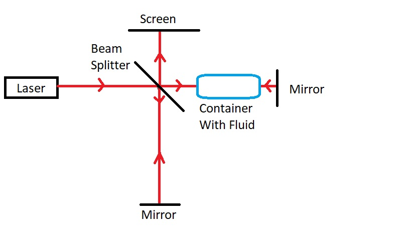

In 3rd Semester, we did a Course on Optics (PHY224) where we had a 3-hour lab twice a week. Throughout the semester, we did some already designed experiments. The lab experience was really cool. But the best part was the one experiment we were allowed to choose by ourselves. For the last two weeks (a total of 12 hours) we could design and conduct an experiment by ourselves. It was a great experience and a lot of credit for that must go to Prof. Saikat Ghosh who has to be one of the best professors I have studied under.
I discussed a few options with Professor before settling on 'Measuring Temperature Dependence of Refractive Index of various Liquids'. So basically I set up a Michelson's interferometer. For the uninitiated, you can watch the first 40 seconds of this video which I took from the LIGO Caltech website. I obviously didn't need gravitational waves. All I needed was varying temperature of the fluid. My setup was a tiny bit different from the one in the above video for I had a lens right before the laser hit the beam-splitter. The idea was to have a long transparent container with the desired liquid in there along one of the arms of the interferometer. Thus even if the geometric path length of the light from the two arms is same, the optical path length would be different. And with changing refractive index of the fluid in the container, the optical path length would also change. Thus we will have changing path difference between the light that gets on the screen and thus varying patterns.
Below I have included a paint-made image of the setup I used:

This looked not easy but simple. Was straightforward at first. But there is more in it than what meets the eye. The first issue we ran into was How to heat up the fluid in the container? After much deliberation we decided we will instead heat it up first and then let it cool and observe how many circular fringes collapse for each degree Celsius change in temperature. But it was not going to be so quick. We were told that the glass container we were using would not be able to withstand temperature higher than ~65°C. According to the person in the lab, the glue that kept it together would give way. So for more than 2 days, we tried to solve the problem. We tried Tape Heater, some other devices I didn't know how they worked and many more. We also tried to get one container made for ourselves from the Glass Blowing Center at IITK. But they could only make tubes. Was not possible to have a closed container that can store the fluid in. On the very last day, we finally heated up the entire thing. The fluid in it and the container all went to the burner. Of course, it could have shattered but a lot was at stake. And if it were to work, we could be on a roll. So it was worth a gamble. And the gamble paid off.
The container stood much beyond 65°C. In fact, it was intact till 120°C and I didn't raise the temperature further so I can't say when it would have shattered. It was a moment of joy. A moment of triumph. I remember telling a friend something on the lines of Though this was frustrating at times, I don't mind doing this kind of stuff for the rest of my life. And he agreed. I did this for Water and for Chloroform (Chloroform is volatile. Very difficult to raise the temperature). I didn't have time to do it for more fluids. But this summer, I think I will be able to find some time and do the same exercise for a few other liquids as well. Meanwhile, one should take some time to appreciate Michelson's interferometer. It is so versatile and gives great precision. And the beautiful fringes (The image in the Header) on the screen are a plus. The beauty is in simplicity. Though setting it up might be an arduous task, the rewards are well worth it and more.
Also, kind of funny how the man who allegedly said something on the lines of We have figured out the most of the Physics and only thing that remains is more precise measurement
ends up devising something that opened the gates for relativity. How something that bore his name helped prove his assertion wrong. That is another justification to the title of the post.